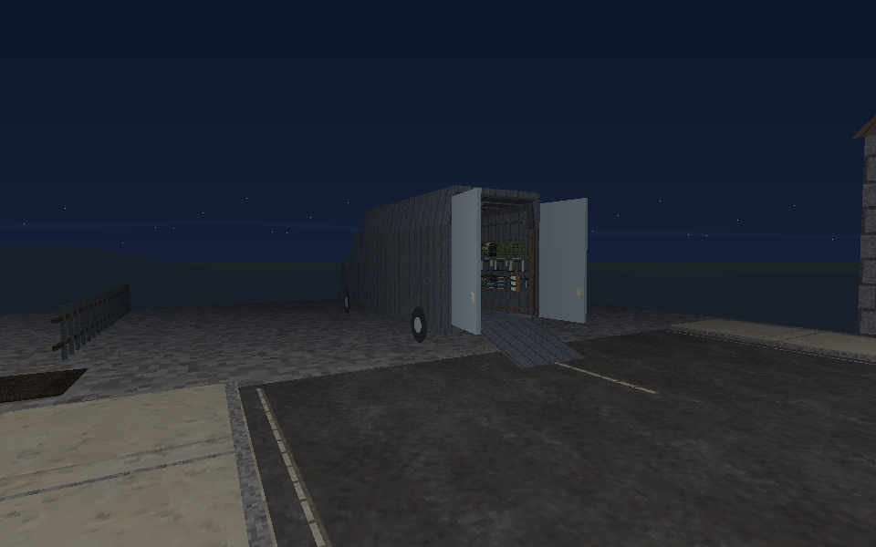
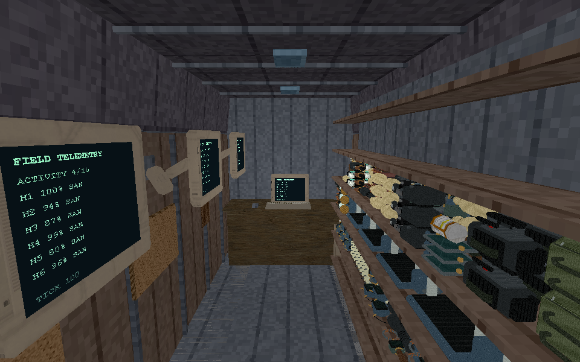
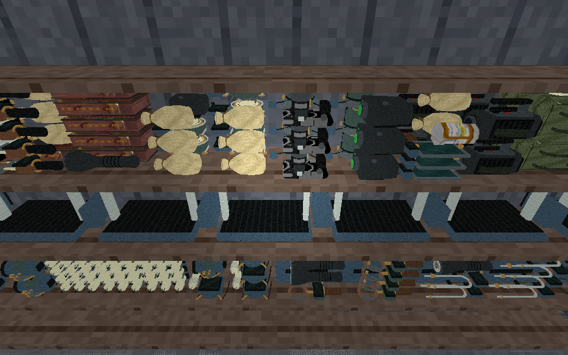
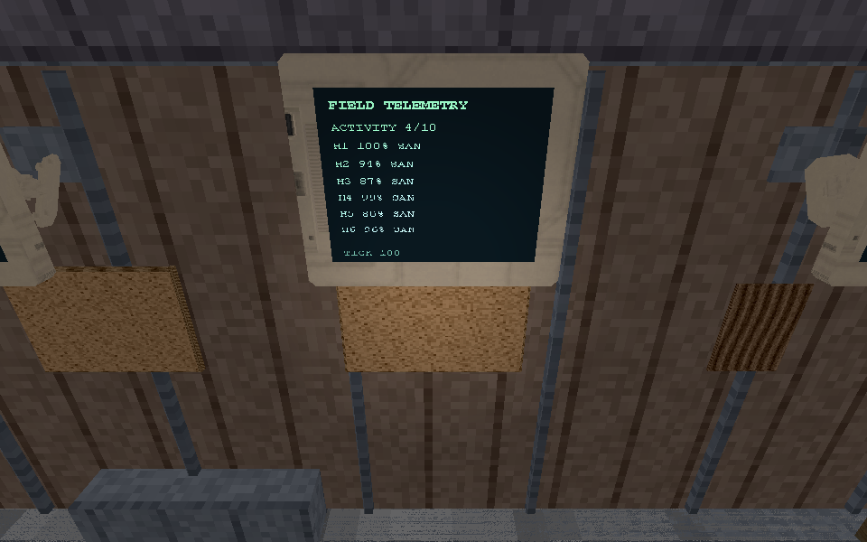
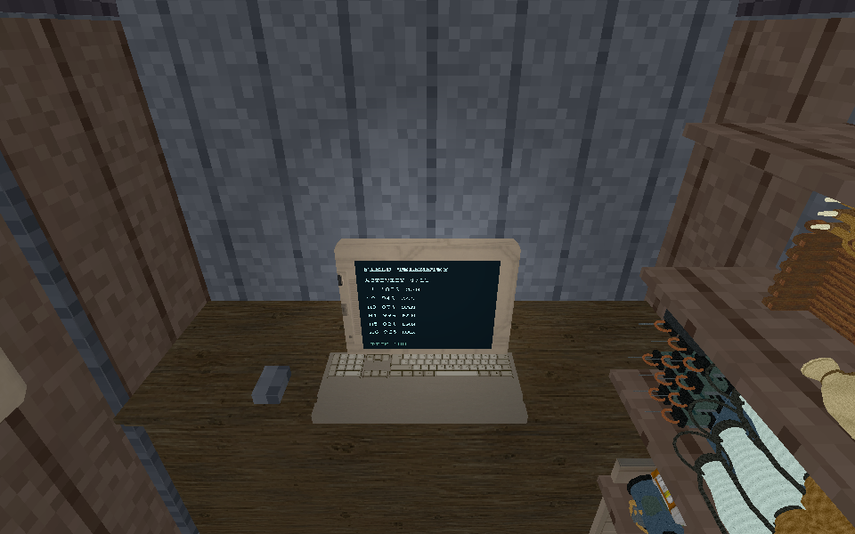
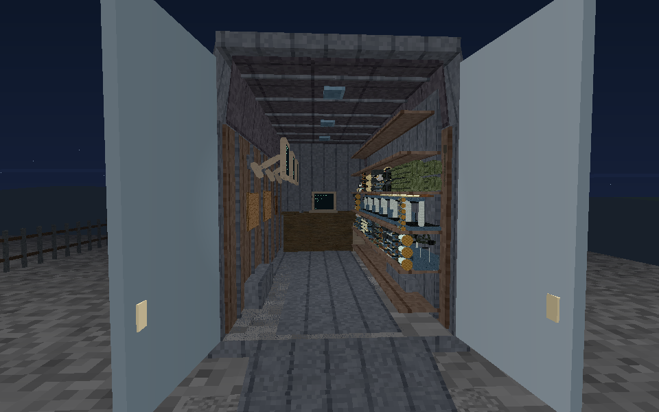
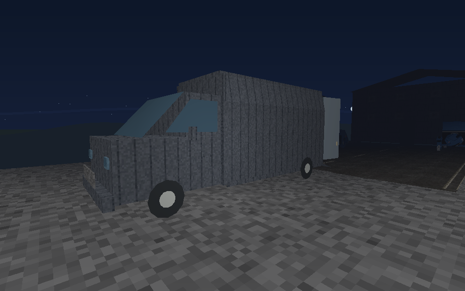

Actual game renderer captures of the 2.059m-wide van, raised cargo floor, loading ramp, clear central aisle, retained street and source furniture. Stock review contains 204 native-sized physical units from an explicit six-investigator inventory fixture; carried items are excluded. It is a capacity/placement review, not a claim about a starting wallet.
Wall monitors face the aisle with upright text and have compact rear mounts. Equipment lies on wooden shelves without individual gray boxes. Exact review inventory · Dimensions and verification workflow.






